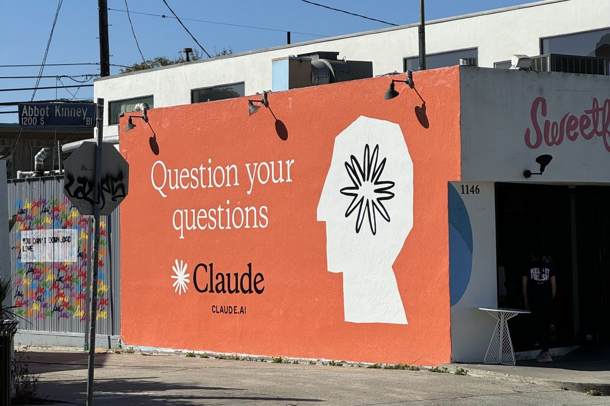
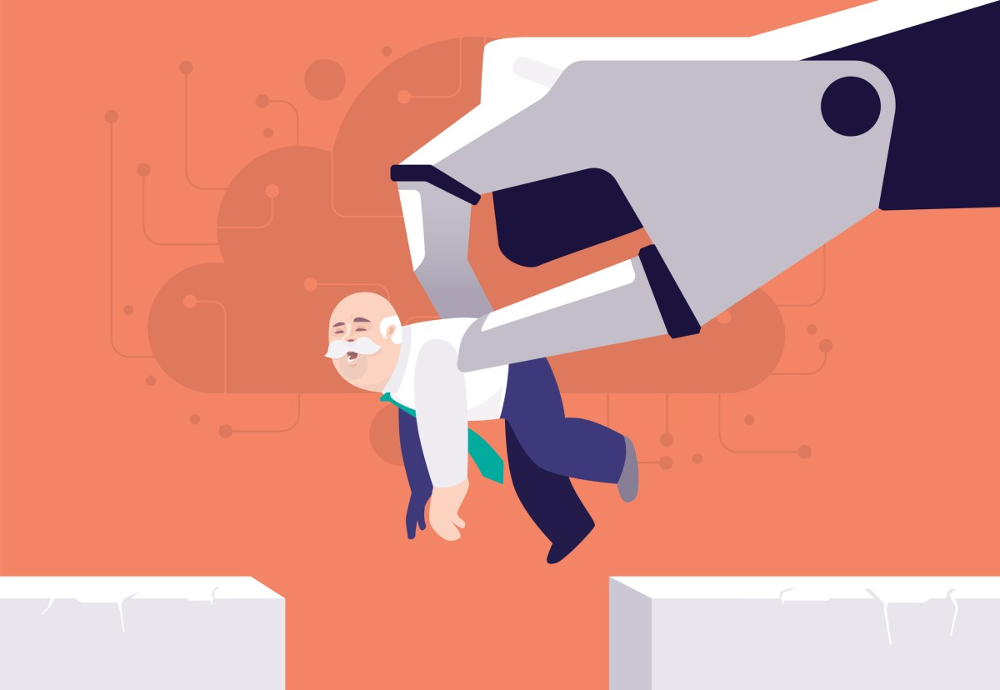
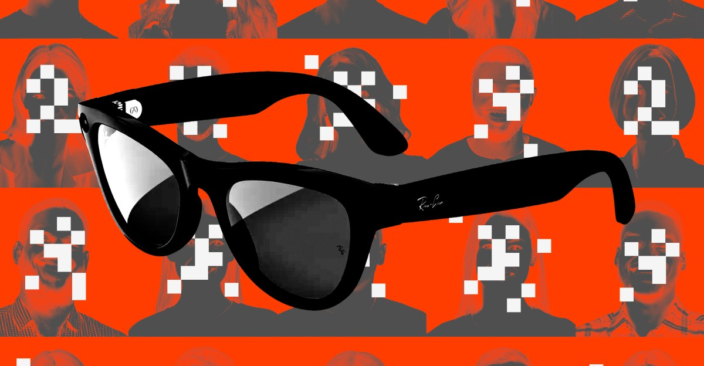
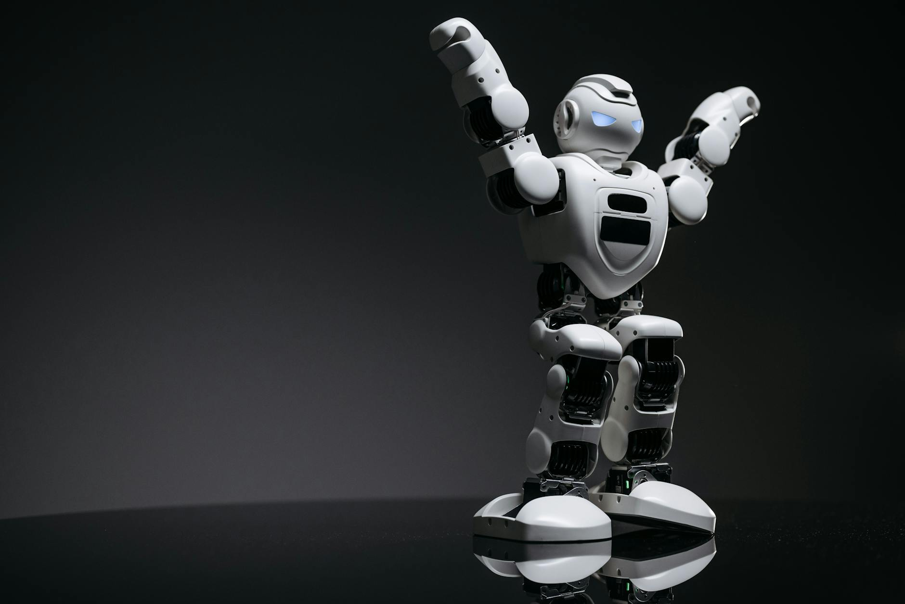

AI DAILY
AI 行业日报
2026年3月2日 · 精选 6 条
01市场数据
被封杀反而爆火：Claude 登顶美国 App Store 第一

特朗普下令联邦机构停用 Anthropic 产品后，Claude 在美国 App Store 排名一路攀升，周六超越 ChatGPT 登顶免费应用榜第一。SensorTower 数据显示，它在 1 月底还排在 100 名开外，2 月大部分时间在前 20，最近几天从第 6 跳到第 4 再到第 1。
Anthropic 称本周每日新增注册连续打破历史纪录，免费用户较 1 月增长超 60%，付费订阅用户今年已翻倍。此前 Anthropic 因拒绝让 AI 用于大规模国内监控和全自主武器，被五角大楼列为供应链威胁。
INSIGHT
政府封杀变成了最好的免费广告——用户用下载投了票。但 Claude 面对的问题是，流量高峰过后能留住多少人。ChatGPT 花了两年构建的使用习惯，不是一波热度能替代的。
02行业动态
SaaSpocalypse：AI 编程 Agent 正在瓦解传统 SaaS 商业模式

一位创始人告诉投资人，他正在用 Claude Code 替换整个客服团队。投资机构 One Way Ventures 认为，编程 Agent 让"自建 vs 采购"的天平大幅倒向了自建。当 AI Agent 可以直接从系统拉数据，按人头收费的 SaaS 模式开始失效。
Klarna 早在 2024 年底就放弃了 Salesforce CRM，改用自建 AI 系统。2 月初，投资者抛售抹掉软件和服务类股票近 1 万亿美元市值，Salesforce、Workday 股价持续下滑。客户手握终极谈判筹码：不满意就自己造。
INSIGHT
SaaS 的护城河是切换成本，但 AI Agent 正在把这道护城河填平。当一个编程 Agent 能在几天内复制你卖了十年的核心功能，70-90% 的毛利率就不再是商业模式优势——而是竞争对手的靶心。
03行业动态
Meta 眼镜上线面部识别功能 Name Tag，内部备忘录时机选择曝光

Ray-Ban Meta 眼镜即将上线 Name Tag 功能——通过前置摄像头实时识别你看到的人。纽约时报披露了 Meta 去年的内部备忘录，公司判断该功能应在"动荡的政治环境"期间推出，因为"通常会抨击我们的民间团体正把资源集中在其他事务上"。
评论者指出一个矛盾：政府一直在声讨 ICE 执法人员被"人肉搜索"的问题，但对面部识别进入消费级眼镜却没有表态。Meta 已通过政策讨好、捐款等方式与特朗普政府建立了紧密关系。
INSIGHT
那份备忘录的逻辑很直白：趁公众注意力被别的事分散，把争议功能推上线。面部识别本身是技术趋势，但选择在监管真空期发布，说明 Meta 清楚产品的争议性——只是赌用户已经麻木了。
04观点评论
Anthropic 的自设之困：行业自律为何反噬自身

MIT 物理学家、Future of Life Institute 创始人 Max Tegmark 在采访中评价 Anthropic 困局：十年前行业畅想 AI 治愈癌症，如今美国政府因一家公司不愿让 AI 用于国内监控和自主杀人而动用了国安法封杀。Anthropic 同周还放弃了自身安全承诺的核心条款——不在确认安全之前发布更强模型。
Tegmark 认为根源在更早的选择：Anthropic、OpenAI、Google DeepMind 多年来抵制外部监管，承诺自我治理。但没有规则约束时，自律承诺反而变成了只约束遵守者的枷锁。OpenAI 随后接下了五角大楼合同。
INSIGHT
行业自律模式的结构性缺陷在这次事件中完全暴露：有底线的被踢出局，没底线的拿到合同。这不是 Anthropic 一家的困境，而是所有选择"先发展后监管"的科技公司共同埋下的雷。
05行业动态
县集市啤酒帐篷的沙门氏菌之谜：卫生官员请 ChatGPT 来帮忙
伊利诺伊州 Brown County 集市爆发了一起沙门氏菌感染，13 人中招。调查人员最初怀疑食品摊位，但 4 名患者什么都没吃——唯一的共同点是喝了啤酒帐篷的冰镇罐装啤酒。帐篷用一根 3 米长的非食品级黑色塑料排水管做冰桶，整个集市期间只冲洗过一次。
调查人员把线索输入 ChatGPT 验证假设。CDC 的 MMWR 报告称 AI 帮助确认了冰块→罐体表面污染→手口传播的路径。不过报告也指出，ChatGPT 更多是强化了调查人员已有的判断方向，而非独立得出结论。
INSIGHT
这个案例比 AI 诊断癌症更接地气——小镇卫生官员用 ChatGPT 在几千人的集市里锁定了一根排水管。AI 在公共卫生领域的价值，可能不在前沿研究，而在基层排查的加速。
06行业动态
人形机器人想"上岗"：3 个月 6.4 万家新企业，但还打不了螺丝

春晚机器人亮相后，3 个月内超 6.4 万家机器人相关企业注册成立。用傅盛的话说，在深圳花 200 万搞个机器人打个 LOGO，只要能走两步就可能拿到融资。京东平台上，春晚后机器人搜索量环比增长超 300%，宇树、魔法原子等品牌产品售罄。
但何小鹏戳破了"进厂打螺丝"的幻想：机器人做工业拧螺丝，几个月就要换一次机械手，费用够雇一个工人好几年。目前 B 端客户采购机器人的逻辑更多是"买流量"——利用新鲜感做营销，而不是真正替代人力。美国人形机器人企业 Cartwheel Robotics 已因融资断裂倒闭。
INSIGHT
6.4 万家企业注册的背后是典型的"概念车式创业"——看似接近量产，但一个核心指标不达标整个项目都可能砍掉。IPO 窗口不会永远开着，今年谁能上市，谁就有资格进入下一轮真正的量产比拼。
由 Zayen知览 整理 · 构建者视角